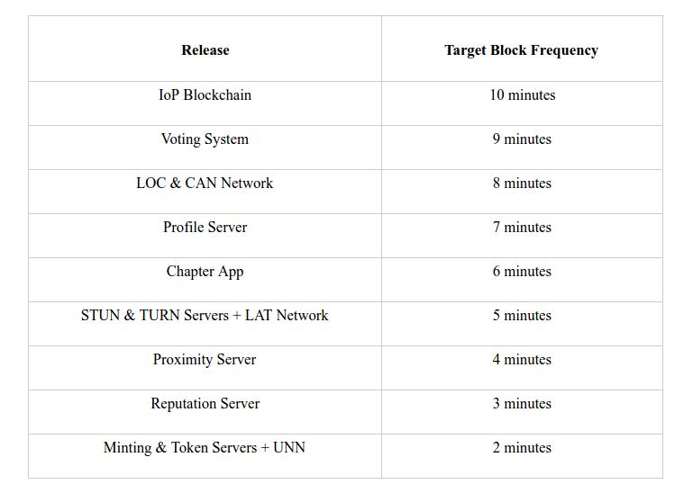
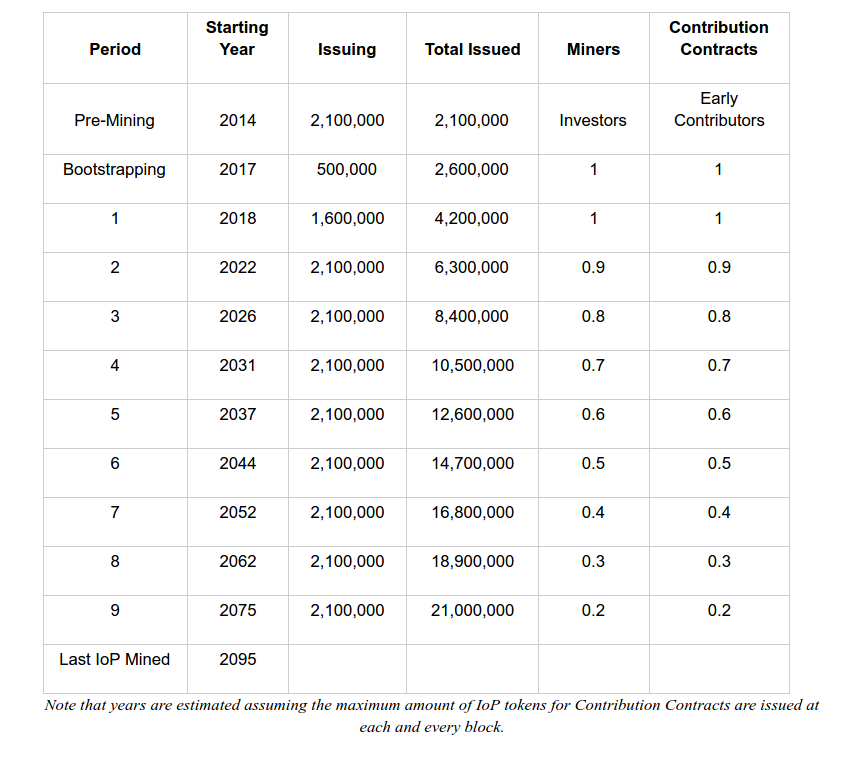

After having our IoP token blockchain running for a couple of months I took the time to do some very basic analysis of the actual data. This is what I discovered so far:
The IoP System includes several components, most of them were already explained in this post. As one of those components is a blockchain, we need to prevent hard forks of the chain itself produced by miners not upgrading their software every time a new component is released. To deal with this situation, we start our blockchain with a rate of 1 block every ten minutes and with each software release we decrease the target time for new blocks. As tokens are to be issued faster with every release we expect this incentive to be enough to assure that every miner will upgrade their software, reducing the possibility of a fork in the blockchain. The blockchain started a few months before 2017 with a 10 minutes block frequency and will be reduced to 2 minutes in several steps according to these milestones during that year:
Today the frequency is 1 block every 10 minutes. The final block frequency of a block every two minutes will be reached by 2018. Since every block issues 1 IoP for miners and a second IoP maximum for Contribution Contracts (from 2017), that means that by 2018 the maximum issuing rate will be at 1 IoP token per minute.
IoP halving is not like bitcoin every a fixed number of blocks. Instead equivalent events occurs every time it is issued a 10% of the total supply (10% equals 2.1 Million IoPs). It is not even a halving event, since what we do is that we reduce the issuing both for miners and for Contribution Contracts in 0.1 IoPs per block.
The first 10% was issued during the first 2 years of the project, in the form of pre-mined IoP tokens. Then the bootstrapping period started in October of 2016, when the IoP blockchain was started.
At the highest issuing rate possible of 1 IoP per minute, it takes exactly 4 years for the next 2.1 Million IoPs to be issued (an amazing coincidence with bitcoin, since bitcoin halvings occurs also every 4 years). The first period at full speed will start approximately at 2018, and it will last for more than 4 years. Remember that during 2017, the bootstrapping period, the block frequency will be increasing with every component released from 1 block every 10 minutes, to 1 block every 2 minutes. Also, the maximum amount of 2 IoP tokens per block will not be issued in every block , since approved Contribution Contracts are needed for that. That means that the exact time of Cutting Events can not be estimated.
Once the first Cutting Event occurs, we will enter the second period at full speed approximately by the year 2022. The issuing during that period will be 0.9 tokens for miners and 0.9 IoPs for Contribution Contracts. At full issuing capacity the next 2.1M IoPs will be issued in approx 4.4 years. By that time the next Cutting Event will occur, reducing the issuing to 0.8 IoP for miners and 0.8 for contribution contracts during the next 5 years. The process will continue until the maximum supply of 21M IoP tokens are issued, in which case no more Cutting Events will occurs since the issuing will be reduced to zero IoP both for miners and Contribution Contracts. From there, only transactions fees will be collected by miners. The following table summarizes this projection.
The earliest the last IoP token might be mined is by the year 2095. By that time, the Internet of People and the Person to Person Economy should have reached their goals of enabling a connected but decentralized human species.